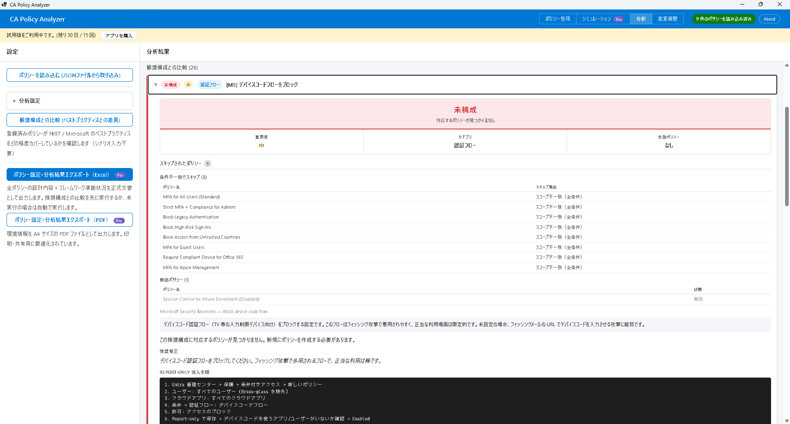

CA Policy Analyzer ユーザーマニュアル

ギャップ分析の結果を踏まえて、ポリシー全体の「設計カバレッジ」を評価する機能です。
個々の推奨項目の適合状況だけでなく、ポリシーの組み合わせで保護されていないシナリオ（設計上の隙間）を検出します。これにより、個別のポリシーは正しく構成されていても、全体として見たときに残るセキュリティリスクを可視化できます。
ポリシーが個別には正しくても、組み合わせによって保護されないケースを特定します。
例:
検出された設計不備は、ステータス Design Flaw として表示されます。
多くの組織では、管理者グループをセキュリティポリシーから除外しています。この分析では、以下の観点から管理者の保護状況を評価します:
管理者グループ名は「分析設定」で登録してください。正確な分析にはグループ名の設定が必要です。
「管理者保護を追加した場合」のセクションでは、以下の指標が表示されます:
| 指標 | 現在 | 改善後 |
|---|---|---|
| 管理者除外ポリシー数 | 5 | 5 |
| 専用ポリシーでカバー済み | 2 | 5 |
| 保護不足 | 3 | 0 |
| 推定準拠率 | 65% | 82% |
これにより、管理者保護の強化がどの程度セキュリティ向上につながるかを定量的に把握できます。改善後の数値は、管理者専用ポリシーをすべて追加した場合のシミュレーション値です。
CA Policy Analyzer User Manual
Coverage Analysis evaluates the overall "design coverage" of your policies, building on the results of the Gap Analysis.
Rather than only checking compliance of individual recommendations, it detects scenarios that are not protected by any combination of policies (design gaps). This allows you to visualize security risks that remain when looking at your policies as a whole, even if each individual policy is correctly configured.
Identifies cases where policies are individually correct but fail to provide protection when combined.
Examples:
Detected design flaws are displayed with the status Design Flaw.
Many organizations exclude administrator groups from security policies. This analysis evaluates the protection status of administrators from the following perspectives:
Register your administrator group name in "Analysis Settings." Accurate analysis requires the group name to be configured.
The "If administrator protection is added" section displays the following metrics:
| Metric | Current | After Improvement |
|---|---|---|
| Policies excluding admins | 5 | 5 |
| Covered by dedicated policy | 2 | 5 |
| Insufficient protection | 3 | 0 |
| Estimated compliance rate | 65% | 82% |
This allows you to quantitatively understand how much strengthening administrator protection will improve your overall security posture. The "After Improvement" values are simulated figures assuming all dedicated administrator policies are added.